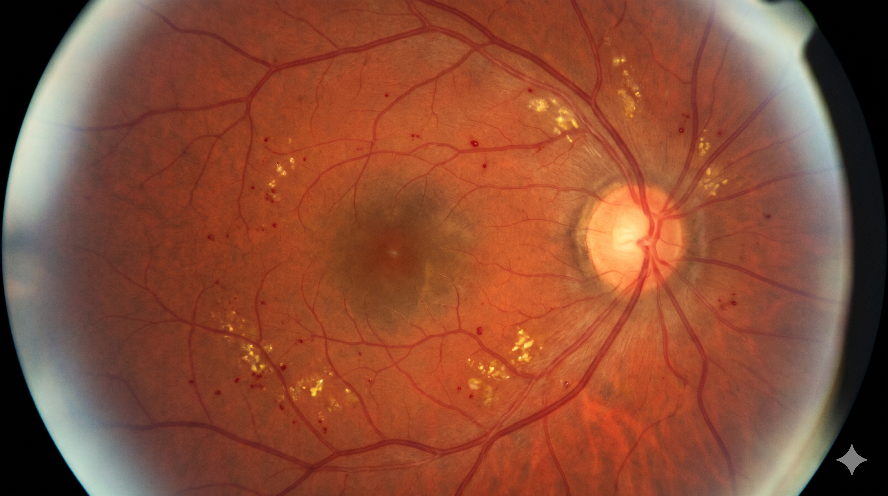

MT
Marcus Thorne
(62y, Male) DIABETIC RETINA SCREENING
ID: PT-OPHTH-9204
•
Modality: 45° Posterior Pole Fundus Photography OD
•
Acuity: 20/30
Ophthalmology (Vitreoretinal)
Posterior Pole Fundus
Right Eye (OD)

CDR: 0.68
Borderline Glaucoma
4 Microaneurysms Detected
PDF
retinal_fundus_evaluation.pdf
215 KB • Verified
Diagnostic Ophthalmology Report
PT-OPHTH-9204
Indication:
Annual diabetic eye screening in 62-year-old male with 8-year history of Type-2 Diabetes Mellitus (HbA1c 7.6%).
Diabetic Retinopathy Classification (ICDR)
Stage: Mild NPDR
Microaneurysms: 4 punctate spots
Macular Edema: Absent (No CSME)
Optic Disc CDR: 0.68 vertical
Exudates: None observed
Diagnostic Impression:
1. Mild Non-Proliferative Diabetic Retinopathy (NPDR) without macular edema.
2. Borderline vertical cup-to-disc ratio (CDR 0.68) suspicious for early open-angle glaucoma.
3. Recommend Humphrey Visual Field (24-2) and OCT RNFL perimetry within 4 weeks.
Clinical Report AI Co-Pilot
Grounded in Retinal Fundus & ICDR staging
Evaluate CDR & optic disc
Check macular edema risk
Diabetic retinopathy staging
Ask clinical co-pilot about this fundus photo...